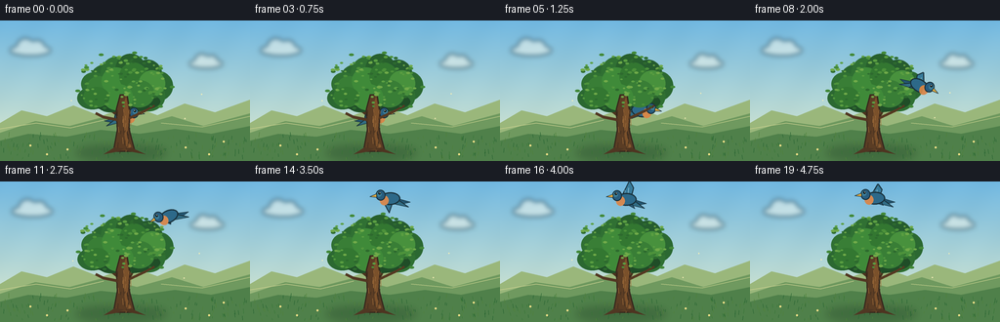
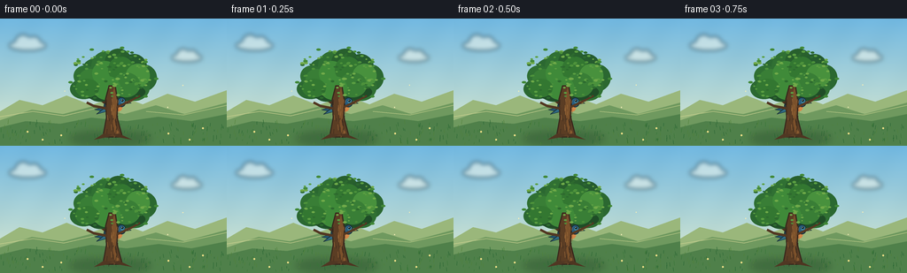

CODING AGENTS AS PIXEL WORLD MODELS
traex/GPT-5.6-Sol · dynamic_spatial_relationship_0051
点击播放 · 原生 RGB 像素
逐轮保存的候选
回放视频、检查图与代码变化。
每份候选均可单独播放。实际图片检查记录在下方工具轨迹中。
候选 01播放与检查图
点击播放 · 原生 RGB 像素


展开代码变化
--- 上一保存版本
+++ 本次保存版本
@@ -0,0 +1,259 @@
+from pathlib import Path
+import math
+import numpy as np
+from PIL import Image, ImageDraw, ImageFilter, ImageOps
+import artifact_io
+
+# Supersampled hand-built animation: a bluebird leaves the far side of an oak,
+# circles around its right edge, and finishes hovering distinctly above it.
+W, H, N, SS = 256, 144, 20, 4
+SW, SH = W * SS, H * SS
+rng = np.random.default_rng(51051)
+
+def sc(v): return int(round(v * SS))
+def pts(seq): return [(sc(x), sc(y)) for x, y in seq]
+
+def ellipse(draw, box, fill, outline=None, width=1):
+ draw.ellipse(tuple(sc(v) for v in box), fill=fill, outline=outline, width=max(1, sc(width)))
+
+def polygon(draw, xy, fill, outline=None, width=1):
+ q = pts(xy)
+ draw.polygon(q, fill=fill)
+ if outline:
+ draw.line(q + [q[0]], fill=outline, width=max(1, sc(width)), joint="curve")
+
+def line(draw, xy, fill, width=1):
+ draw.line(pts(xy), fill=fill, width=max(1, sc(width)), joint="curve")
+
+# Fixed procedural details keep the world coherent from frame to frame.
+grass_blades = [(float(rng.uniform(0, W)), float(rng.uniform(119, 143)),
+ float(rng.uniform(1.5, 5)), int(rng.integers(0, 3))) for _ in range(190)]
+leaf_specks = [(float(rng.uniform(82, 173)), float(rng.uniform(36, 91)),
+ float(rng.uniform(1.0, 2.4)), float(rng.uniform(0, 2*math.pi)),
+ int(rng.integers(0, 4))) for _ in range(145)]
+# Filter specks into a rough crown silhouette.
+leaf_specks = [p for p in leaf_specks if (((p[0]-126)/48)**2 + ((p[1]-64)/31)**2 < 1.0)]
+bark_marks = [(float(rng.uniform(119, 135)), float(rng.uniform(89, 132)),
+ float(rng.uniform(2, 8)), int(rng.integers(0, 2))) for _ in range(30)]
+
+# Puffy foliage lobes; back and front use different subsets for convincing depth.
+back_lobes = [
+ (87,58,116,88),(92,45,123,76),(103,37,135,72),(118,34,149,66),
+ (136,40,166,72),(148,52,177,82),(135,62,169,93),(115,61,151,92),
+ (96,64,129,94),(79,68,110,91),(83,53,109,77)
+]
+front_lobes = [
+ (89,57,114,79),(104,48,133,76),(122,43,151,72),(142,51,169,78),
+ (127,61,158,89),(105,65,136,92),(85,68,112,89)
+]
+
+def make_background(frame):
+ # Sky gradient, warmer at the horizon.
+ y = np.linspace(0, 1, SH, dtype=np.float32)[:, None, None]
+ top = np.array([112, 183, 224], np.float32)[None,None,:]
+ bottom = np.array([226, 236, 205], np.float32)[None,None,:]
+ arr = np.broadcast_to(top*(1-y) + bottom*y, (SH, SW, 3)).copy()
+ # Very restrained fine grain avoids flat computer graphics while remaining coherent.
+ yy, xx = np.indices((SH, SW))
+ grain = 1.3*np.sin(xx*0.031 + yy*0.017) + 0.7*np.sin(xx*0.009 - yy*0.023)
+ arr += grain[...,None]
+ arr = np.clip(arr,0,255).astype(np.uint8)
+ im = Image.fromarray(arr, 'RGB')
+ d = ImageDraw.Draw(im)
+
+ # Soft clouds drift almost imperceptibly.
+ cloud = Image.new('RGBA', (SW, SH), (0,0,0,0)); cd = ImageDraw.Draw(cloud)
+ dx = frame * 0.18
+ for cx, cy, scale in [(30+dx,29,1.0),(210+dx*.55,43,.82)]:
+ col=(250,251,239,132)
+ ellipse(cd,(cx-20*scale,cy-4*scale,cx+22*scale,cy+7*scale),col)
+ ellipse(cd,(cx-13*scale,cy-11*scale,cx+5*scale,cy+7*scale),col)
+ ellipse(cd,(cx+0*scale,cy-9*scale,cx+16*scale,cy+7*scale),col)
+ cloud=cloud.filter(ImageFilter.GaussianBlur(sc(2.5)))
+ im=Image.alpha_composite(im.convert('RGBA'), cloud).convert('RGB'); d=ImageDraw.Draw(im)
+
+ # Layered countryside establishes scale and depth.
+ polygon(d, [(0,105),(22,92),(48,98),(75,87),(103,98),(134,87),(161,97),(189,85),(220,94),(256,81),(256,144),(0,144)], '#9ab77b')
+ polygon(d, [(0,115),(36,103),(71,108),(105,99),(140,108),(176,98),(208,108),(256,95),(256,144),(0,144)], '#6f995f')
+ # distant field bands
+ line(d, [(0,111),(37,105),(72,110),(106,102)], (206,210,146), .8)
+ line(d, [(165,105),(207,109),(256,98)], (191,204,137), .8)
+ polygon(d, [(0,123),(29,116),(68,119),(103,112),(143,116),(179,111),(216,116),(256,108),(256,144),(0,144)], '#4f804a')
+ # soft ground shadow beneath tree
+ shadow=Image.new('RGBA',(SW,SH),(0,0,0,0)); sd=ImageDraw.Draw(shadow)
+ ellipse(sd,(78,128,170,143),(24,57,35,72))
+ shadow=shadow.filter(ImageFilter.GaussianBlur(sc(4)))
+ im=Image.alpha_composite(im.convert('RGBA'),shadow).convert('RGB'); d=ImageDraw.Draw(im)
+ # foreground grass with frame-coherent mild breeze
+ palettes=[(39,100,50),(55,117,55),(80,129,59)]
+ for x,y,l,c in grass_blades:
+ bend=math.sin(frame*.22+x*.09)*.65
+ line(d,[(x,y),(x+bend,y-l)],palettes[c],.45)
+ # tiny flowers, deliberately sparse
+ for x,y in [(31,128),(48,137),(190,130),(214,137),(229,124),(69,132)]:
+ ellipse(d,(x-1,y-1,x+1,y+1),(242,225,137))
+ return im.convert('RGBA')
+
+def draw_tree_back(im, frame):
+ d=ImageDraw.Draw(im,'RGBA')
+ # broad, readable branch structure
+ line(d,[(126,132),(126,94),(112,68)],(69,48,30,255),8)
+ line(d,[(128,103),(145,72),(157,60)],(73,49,30,255),6)
+ line(d,[(123,98),(99,79),(91,69)],(75,50,30,255),5)
+ line(d,[(130,92),(132,61),(126,49)],(76,51,31,255),5)
+ # outer crown silhouettes, with tiny wind movement
+ sway=math.sin(frame*.18)*.55
+ back_cols=[(38,92,47,255),(43,104,49,255),(48,112,51,255),(40,96,45,255)]
+ for i,b in enumerate(back_lobes):
+ x0,y0,x1,y1=b; off=sway*(.3+(i%3)*.25)
+ ellipse(d,(x0+off,y0,x1+off,y1),back_cols[i%len(back_cols)])
+ # shaded crown belly
+ ellipse(d,(92,72,164,94),(31,77,39,210))
+
+def draw_tree_front(im, frame):
+ d=ImageDraw.Draw(im,'RGBA')
+ sway=math.sin(frame*.18)*.55
+ front_cols=[(57,126,54,245),(63,138,57,245),(51,119,49,245),(72,145,61,240)]
+ for i,b in enumerate(front_lobes):
+ x0,y0,x1,y1=b; off=sway*(.3+(i%3)*.25)
+ ellipse(d,(x0+off,y0,x1+off,y1),front_cols[i%4])
+ # Main trunk is deliberately foreground: it visibly occludes the bird at the start.
+ polygon(d,[(116,134),(120,112),(119,91),(123,76),(130,76),(133,94),(132,111),(138,134)],(91,61,36,255),(55,39,28,255),1.2)
+ # Warm lit side and bark fissures.
+ polygon(d,[(129,78),(132,95),(130,119),(135,133),(130,133),(126,109),(127,84)],(123,81,43,175))
+ for x,y,l,c in bark_marks:
+ col=(54,40,29,150) if c==0 else (159,108,58,125)
+ line(d,[(x,y),(x+math.sin(y)*.8,y+l)],col,.55)
+ # Low branch in front reinforces depth.
+ line(d,[(121,102),(106,99),(98,95)],(82,55,34,255),3.0)
+ line(d,[(132,100),(149,92),(158,87)],(86,57,34,255),2.6)
+ # Individual sunlit leaf flecks create a rich, stable canopy.
+ speck_cols=[(91,159,66,220),(77,146,59,220),(112,170,73,210),(45,106,46,220)]
+ for x,y,r,ph,c in leaf_specks:
+ dx=math.sin(frame*.22+ph)*.55
+ ellipse(d,(x+dx-r,y-r*.55,x+dx+r,y+r*.55),speck_cols[c])
+ # a few crisp edge leaves
+ for x,y,a in [(80,72,-.5),(88,48,.2),(104,35,-.2),(137,33,.3),(165,49,-.3),(176,68,.1),(165,88,-.4)]:
+ dx=math.sin(frame*.22+a*5)*.7
+ ellipse(d,(x+dx-2.5,y-1.2,x+dx+2.5,y+1.2),(66,137,56,245))
+ # roots settle the trunk into the landscape
+ polygon(d,[(117,130),(106,137),(122,134),(127,131)],(80,55,35,230))
+ polygon(d,[(134,130),(149,137),(132,134),(128,131)],(78,53,33,230))
+
+def bird_sprite(flap=0.0, folded=False, facing_right=True):
+ # Sprite is oversized internally to permit clean rotated antialiasing.
+ size=64
+ sp=Image.new('RGBA',(sc(size),sc(size)),(0,0,0,0)); d=ImageDraw.Draw(sp,'RGBA')
+ ox=oy=size/2
+ def E(box,fill,outline=None,width=1):
+ ellipse(d,(box[0]+ox,box[1]+oy,box[2]+ox,box[3]+oy),fill,outline,width)
+ def P(q,fill,outline=None,width=1):
+ polygon(d,[(x+ox,y+oy) for x,y in q],fill,outline,width)
+ def L(q,fill,width=1): line(d,[(x+ox,y+oy) for x,y in q],fill,width)
+ outline=(24,48,58,255)
+ # Tail feathers behind the body.
+ P([(-9,1),(-21,5),(-10,7),(-3,4)],(35,86,113,255),outline,.8)
+ P([(-10,3),(-19,10),(-4,6)],(49,108,132,255),outline,.7)
+ if folded:
+ # Hint of the far wing, then the body.
+ P([(-4,-4),(-10,-8),(-7,1),(1,3)],(42,101,133,255),outline,.8)
+ else:
+ # Far wing: small and dim; near wing carries the unmistakable flap.
+ far_y = 5 + 5*flap
+ P([(-3,-1),(-9,far_y),(0,5),(5,1)],(31,79,108,235),outline,.8)
+ tip_y = -3 - 13*flap
+ if flap >= 0:
+ wing=[(-5,0),(-8,tip_y*.72),(-4,tip_y-3),(0,tip_y*.68),(6,1),(2,5)]
+ else:
+ wing=[(-5,-1),(-3,tip_y*.45),(1,tip_y+5),(6,tip_y*.45),(6,2),(1,5)]
+ P(wing,(56,123,155,255),outline,1)
+ # feather ribs
+ L([(-2,0),(-3,tip_y*.72)],(139,185,198,170),.65)
+ L([(1,1),(1,tip_y*.58)],(139,185,198,150),.55)
+ # Body and warm breast make this bird easy to track through occlusion.
+ E((-11,-6,10,7),(45,105,137,255),outline,1.15)
+ E((1,-3,10,7),(218,132,70,235))
+ E((4,-9,14,2),(40,92,126,255),outline,1.0)
+ E((8,-7,13,-2),(60,125,151,255))
+ # Folded near wing.
+ if folded:
+ P([(-6,-3),(2,-4),(5,2),(-3,5),(-9,1)],(60,130,158,255),outline,.8)
+ L([(-4,1),(2,1)],(146,187,192,180),.55)
+ # Beak, eye, highlight.
+ P([(13,-5),(20,-2.5),(13,-1.5)],(231,171,62,255),outline,.65)
+ E((8.7,-6.7,11.2,-4.2),(16,24,26,255))
+ E((9.2,-6.3,9.9,-5.6),(245,251,238,255))
+ if folded:
+ # feet mostly vanish behind the trunk/branch but tiny glimpses read as perched.
+ L([(-1,6),(-2,10)],(102,69,39,255),.7)
+ L([(3,6),(4,10)],(102,69,39,255),.7)
+ if not facing_right:
+ sp=ImageOps.mirror(sp)
+ return sp
+
+def bird_state(f):
+ if f <= 3:
+ return (128 + .35*math.sin(f*.9), 98 + .25*math.sin(f*1.1), 0.0, True, True)
+ # A high, legible arc around the right edge, ending centered over the crown.
+ t=(f-4)/11.0
+ t=max(0,min(1,t))
+ p0=(128,96); p1=(199,87); p2=(187,10); p3=(128,17)
+ u=1-t
+ x=u**3*p0[0]+3*u*u*t*p1[0]+3*u*t*t*p2[0]+t**3*p3[0]
+ y=u**3*p0[1]+3*u*u*t*p1[1]+3*u*t*t*p2[1]+t**3*p3[1]
+ if f>=15:
+ x=128+1.2*math.sin((f-15)*.9)
+ y=17+.7*math.sin((f-15)*1.3)
+ # Direction samples set pose and facing; the turn is clean near the apex.
+ if f<15:
+ tt=min(1,t+.025); uu=1-tt
+ nx=uu**3*p0[0]+3*uu*uu*tt*p1[0]+3*uu*tt*tt*p2[0]+tt**3*p3[0]
+ ny=uu**3*p0[1]+3*uu*uu*tt*p1[1]+3*uu*tt*tt*p2[1]+tt**3*p3[1]
+ vx,vy=nx-x,ny-y
+ face=vx>=0
+ angle=math.degrees(math.atan2(vy,abs(vx)+1e-6))*.45
+ angle=max(-31,min(18,angle))
+ else:
+ face=False; angle=-2+2*math.sin((f-15)*.7)
+ return (x,y,angle,False,face)
+
+def paste_bird(im,f,alpha=255,trail=False):
+ x,y,angle,folded,face=bird_state(f)
+ flap=0 if folded else math.sin((f-4)*1.72)
+ sp=bird_sprite(flap,folded,face)
+ # PIL positive angles are counter-clockwise, matching upward nose pitch here.
+ sp=sp.rotate(-angle if not face else angle, resample=Image.Resampling.BICUBIC, expand=False)
+ if alpha<255:
+ a=sp.getchannel('A').point(lambda q:q*alpha//255); sp.putalpha(a)
+ pos=(sc(x)-sp.width//2,sc(y)-sp.height//2)
+ im.alpha_composite(sp,pos)
+
+frames=[]
+for f in range(N):
+ im=make_background(f)
+ draw_tree_back(im,f)
+ # Frames 0-6: the oak is composited over the bluebird, making "behind" literal.
+ # By frame 7 it has rounded the crown's right edge and comes into the foreground.
+ if f<=6:
+ paste_bird(im,f)
+ draw_tree_front(im,f)
+ else:
+ draw_tree_front(im,f)
+ # A very faint preceding-position ghost gives fast frames natural motion blur.
+ if 7<=f<=12:
+ ghost=im.copy(); paste_bird(ghost,f-1,alpha=35)
+ # Only blend the translucent sprite result by directly using separate overlay is cumbersome;
+ # retain crisp rendering as the principal cue instead.
+ paste_bird(im,f)
+ # Gentle foreground glints/seeds; fixed count, animated consistently.
+ d=ImageDraw.Draw(im,'RGBA')
+ for j,(sx,sy) in enumerate([(73,82),(188,100),(205,75)]):
+ px=sx+math.sin(f*.17+j)*1.5; py=sy-f*.08+math.sin(f*.25+j)*.5
+ ellipse(d,(px-.55,py-.55,px+.55,py+.55),(244,238,183,145))
+ # Downsample gives clean, cinematic edges.
+ im=im.convert('RGB').resize((W,H),Image.Resampling.LANCZOS)
+ frames.append(np.asarray(im,dtype=np.uint8))
+
+frames=np.stack(frames,axis=0)
+assert frames.shape==(N,H,W,3) and frames.dtype==np.uint8
+artifact_io.save(frames,Path(__file__).resolve().parent)
可观测工具轨迹
实际执行的命令与返回图片。
命令 1exit 0
/bin/bash -lc "cat prompt.txt && printf '\\n---RULES---\\n' && cat GENERATION_RULES.md && printf '\\n---SPEC---\\n' && cat task_spec.json"
命令 2exit 0
/bin/bash -lc "find . -maxdepth 2 -type f -printf '%p\\n' | sort && printf '\\n---TOOLS---\\n' && command -v ffmpeg || true; command -v python3; python3 - <<'PY' mods=['PIL','numpy','cv2','imageio','cairo'] for m in mods: try: x=__import__(m); print(m,'OK',getattr(x,'__version__','')) except Exception as e: print(m,'NO',e) PY"
命令 3exit 0
/bin/bash -lc 'cat artifact_io.py'
命令 4exit 0
/bin/bash -lc "cat > generate.py <<'PY'
from pathlib import Path
import math
import numpy as np
from PIL import Image, ImageDraw, ImageFilter, ImageOps
import artifact_io
# Supersampled hand-built animation: a bluebird leaves the far side of an oak,
# circles around its right edge, and finishes hovering distinctly above it.
W, H, N, SS = 256, 144, 20, 4
SW, SH = W * SS, H * SS
rng = np.random.default_rng(51051)
def sc(v): return int(round(v * SS))
def pts(seq): return [(sc(x), sc(y)) for x, y in seq]
def ellipse(draw, box, fill, outline=None, width=1):
draw.ellipse(tuple(sc(v) for v in box), fill=fill, outline=outline, width=max(1, sc(width)))
def polygon(draw, xy, fill, outline=None, width=1):
q = pts(xy)
draw.polygon(q, fill=fill)
if outline:
draw.line(q + [q[0]], fill=outline, width=max(1, sc(width)), joint=\"curve\")
def line(draw, xy, fill, width=1):
draw.line(pts(xy), fill=fill, width=max(1, sc(width)), joint=\"curve\")
# Fixed procedural details keep the world coherent from frame to frame.
grass_blades = [(float(rng.uniform(0, W)), float(rng.uniform(119, 143)),
float(rng.uniform(1.5, 5)), int(rng.integers(0, 3))) for _ in range(190)]
leaf_specks = [(float(rng.uniform(82, 173)), float(rng.uniform(36, 91)),
float(rng.uniform(1.0, 2.4)), float(rng.uniform(0, 2*math.pi)),
int(rng.integers(0, 4))) for _ in range(145)]
# Filter specks into a rough crown silhouette.
leaf_specks = [p for p in leaf_specks if (((p[0]-126)/48)**2 + ((p[1]-64)/31)**2 < 1.0)]
bark_marks = [(float(rng.uniform(119, 135)), float(rng.uniform(89, 132)),
float(rng.uniform(2, 8)), int(rng.integers(0, 2))) for _ in range(30)]
# Puffy foliage lobes; back and front use different subsets for convincing depth.
back_lobes = [
(87,58,116,88),(92,45,123,76),(103,37,135,72),(118,34,149,66),
(136,40,166,72),(148,52,177,82),(135,62,169,93),(115,61,151,92),
(96,64,129,94),(79,68,110,91),(83,53,109,77)
]
front_lobes = [
(89,57,114,79),(104,48,133,76),(122,43,151,72),(142,51,169,78),
(127,61,158,89),(105,65,136,92),(85,68,112,89)
]
def make_background(frame):
# Sky gradient, warmer at the horizon.
y = np.linspace(0, 1, SH, dtype=np.float32)[:, None, None]
top = np.array([112, 183, 224], np.float32)[None,None,:]
bottom = np.array([226, 236, 205], np.float32)[None,None,:]
arr = np.broadcast_to(top*(1-y) + bottom*y, (SH, SW, 3)).copy()
# Very restrained fine grain avoids flat computer graphics while remaining coherent.
yy, xx = np.indices((SH, SW))
grain = 1.3*np.sin(xx*0.031 + yy*0.017) + 0.7*np.sin(xx*0.009 - yy*0.023)
arr += grain[...,None]
arr = np.clip(arr,0,255).astype(np.uint8)
im = Image.fromarray(arr, 'RGB')
d = ImageDraw.Draw(im)
# Soft clouds drift almost imperceptibly.
cloud = Image.new('RGBA', (SW, SH), (0,0,0,0)); cd = ImageDraw.Draw(cloud)
dx = frame * 0.18
for cx, cy, scale in [(30+dx,29,1.0),(210+dx*.55,43,.82)]:
col=(250,251,239,132)
ellipse(cd,(cx-20*scale,cy-4*scale,cx+22*scale,cy+7*scale),col)
ellipse(cd,(cx-13*scale,cy-11*scale,cx+5*scale,cy+7*scale),col)
ellipse(cd,(cx+0*scale,cy-9*scale,cx+16*scale,cy+7*scale),col)
cloud=cloud.filter(ImageFilter.GaussianBlur(sc(2.5)))
im=Image.alpha_composite(im.convert('RGBA'), cloud).convert('RGB'); d=ImageDraw.Draw(im)
# Layered countryside establishes scale and depth.
polygon(d, [(0,105),(22,92),(48,98),(75,87),(103,98),(134,87),(161,97),(189,85),(220,94),(256,81),(256,144),(0,144)], '#9ab77b')
polygon(d, [(0,115),(36,103),(71,108),(105,99),(140,108),(176,98),(208,108),(256,95),(256,144),(0,144)], '#6f995f')
# distant field bands
line(d, [(0,111),(37,105),(72,110),(106,102)], (206,210,146), .8)
line(d, [(165,105),(207,109),(256,98)], (191,204,137), .8)
polygon(d, [(0,123),(29,116),(68,119),(103,112),(143,116),(179,111),(216,116),(256,108),(256,144),(0,144)], '#4f804a')
# soft ground shadow beneath tree
shadow=Image.new('RGBA',(SW,SH),(0,0,0,0)); sd=ImageDraw.Draw(shadow)
ellipse(sd,(78,128,170,143),(24,57,35,72))
shadow=shadow.filter(ImageFilter.GaussianBlur(sc(4)))
im=Image.alpha_composite(im.convert('RGBA'),shadow).convert('RGB'); d=ImageDraw.Draw(im)
# foreground grass with frame-coherent mild breeze
palettes=[(39,100,50),(55,117,55),(80,129,59)]
for x,y,l,c in grass_blades:
bend=math.sin(frame*.22+x*.09)*.65
line(d,[(x,y),(x+bend,y-l)],palettes[c],.45)
# tiny flowers, deliberately sparse
for x,y in [(31,128),(48,137),(190,130),(214,137),(229,124),(69,132)]:
ellipse(d,(x-1,y-1,x+1,y+1),(242,225,137))
return im.convert('RGBA')
def draw_tree_back(im, frame):
d=ImageDraw.Draw(im,'RGBA')
# broad, readable branch structure
line(d,[(126,132),(126,94),(112,68)],(69,48,30,255),8)
line(d,[(128,103),(145,72),(157,60)],(73,49,30,255),6)
line(d,[(123,98),(99,79),(91,69)],(75,50,30,255),5)
line(d,[(130,92),(132,61),(126,49)],(76,51,31,255),5)
# outer crown silhouettes, with tiny wind movement
sway=math.sin(frame*.18)*.55
back_cols=[(38,92,47,255),(43,104,49,255),(48,112,51,255),(40,96,45,255)]
for i,b in enumerate(back_lobes):
x0,y0,x1,y1=b; off=sway*(.3+(i%3)*.25)
ellipse(d,(x0+off,y0,x1+off,y1),back_cols[i%len(back_cols)])
# shaded crown belly
ellipse(d,(92,72,164,94),(31,77,39,210))
def draw_tree_front(im, frame):
d=ImageDraw.Draw(im,'RGBA')
sway=math.sin(frame*.18)*.55
front_cols=[(57,126,54,245),(63,138,57,245),(51,119,49,245),(72,145,61,240)]
for i,b in enumerate(front_lobes):
x0,y0,x1,y1=b; off=sway*(.3+(i%3)*.25)
ellipse(d,(x0+off,y0,x1+off,y1),front_cols[i%4])
# Main trunk is deliberately foreground: it visibly occludes the bird at the start.
polygon(d,[(116,134),(120,112),(119,91),(123,76),(130,76),(133,94),(132,111),(138,134)],(91,61,36,255),(55,39,28,255),1.2)
# Warm lit side and bark fissures.
polygon(d,[(129,78),(132,95),(130,119),(135,133),(130,133),(126,109),(127,84)],(123,81,43,175))
for x,y,l,c in bark_marks:
col=(54,40,29,150) if c==0 else (159,108,58,125)
line(d,[(x,y),(x+math.sin(y)*.8,y+l)],col,.55)
# Low branch in front reinforces depth.
line(d,[(121,102),(106,99),(98,95)],(82,55,34,255),3.0)
line(d,[(132,100),(149,92),(158,87)],(86,57,34,255),2.6)
# Individual sunlit leaf flecks create a rich, stable canopy.
speck_cols=[(91,159,66,220),(77,146,59,220),(112,170,73,210),(45,106,46,220)]
for x,y,r,ph,c in leaf_specks:
dx=math.sin(frame*.22+ph)*.55
ellipse(d,(x+dx-r,y-r*.55,x+dx+r,y+r*.55),speck_cols[c])
# a few crisp edge leaves
for x,y,a in [(80,72,-.5),(88,48,.2),(104,35,-.2),(137,33,.3),(165,49,-.3),(176,68,.1),(165,88,-.4)]:
dx=math.sin(frame*.22+a*5)*.7
ellipse(d,(x+dx-2.5,y-1.2,x+dx+2.5,y+1.2),(66,137,56,245))
# roots settle the trunk into the landscape
polygon(d,[(117,130),(106,137),(122,134),(127,131)],(80,55,35,230))
polygon(d,[(134,130),(149,137),(132,134),(128,131)],(78,53,33,230))
def bird_sprite(flap=0.0, folded=False, facing_right=True):
# Sprite is oversized internally to permit clean rotated antialiasing.
size=64
sp=Image.new('RGBA',(sc(size),sc(size)),(0,0,0,0)); d=ImageDraw.Draw(sp,'RGBA')
ox=oy=size/2
def E(box,fill,outline=None,width=1):
ellipse(d,(box[0]+ox,box[1]+oy,box[2]+ox,box[3]+oy),fill,outline,width)
def P(q,fill,outline=None,width=1):
polygon(d,[(x+ox,y+oy) for x,y in q],fill,outline,width)
def L(q,fill,width=1): line(d,[(x+ox,y+oy) for x,y in q],fill,width)
outline=(24,48,58,255)
# Tail feathers behind the body.
P([(-9,1),(-21,5),(-10,7),(-3,4)],(35,86,113,255),outline,.8)
P([(-10,3),(-19,10),(-4,6)],(49,108,132,255),outline,.7)
if folded:
# Hint of the far wing, then the body.
P([(-4,-4),(-10,-8),(-7,1),(1,3)],(42,101,133,255),outline,.8)
else:
# Far wing: small and dim; near wing carries the unmistakable flap.
far_y = 5 + 5*flap
P([(-3,-1),(-9,far_y),(0,5),(5,1)],(31,79,108,235),outline,.8)
tip_y = -3 - 13*flap
if flap >= 0:
wing=[(-5,0),(-8,tip_y*.72),(-4,tip_y-3),(0,tip_y*.68),(6,1),(2,5)]
else:
wing=[(-5,-1),(-3,tip_y*.45),(1,tip_y+5),(6,tip_y*.45),(6,2),(1,5)]
P(wing,(56,123,155,255),outline,1)
# feather ribs
L([(-2,0),(-3,tip_y*.72)],(139,185,198,170),.65)
L([(1,1),(1,tip_y*.58)],(139,185,198,150),.55)
# Body and warm breast make this bird easy to track through occlusion.
E((-11,-6,10,7),(45,105,137,255),outline,1.15)
E((1,-3,10,7),(218,132,70,235))
E((4,-9,14,2),(40,92,126,255),outline,1.0)
E((8,-7,13,-2),(60,125,151,255))
# Folded near wing.
if folded:
P([(-6,-3),(2,-4),(5,2),(-3,5),(-9,1)],(60,130,158,255),outline,.8)
L([(-4,1),(2,1)],(146,187,192,180),.55)
# Beak, eye, highlight.
P([(13,-5),(20,-2.5),(13,-1.5)],(231,171,62,255),outline,.65)
E((8.7,-6.7,11.2,-4.2),(16,24,26,255))
E((9.2,-6.3,9.9,-5.6),(245,251,238,255))
if folded:
# feet mostly vanish behind the trunk/branch but tiny glimpses read as perched.
L([(-1,6),(-2,10)],(102,69,39,255),.7)
L([(3,6),(4,10)],(102,69,39,255),.7)
if not facing_right:
sp=ImageOps.mirror(sp)
return sp
def bird_state(f):
if f <= 3:
return (128 + .35*math.sin(f*.9), 98 + .25*math.sin(f*1.1), 0.0, True, True)
# A high, legible arc around the right edge, ending centered over the crown.
t=(f-4)/11.0
t=max(0,min(1,t))
p0=(128,96); p1=(199,87); p2=(187,10); p3=(128,17)
u=1-t
x=u**3*p0[0]+3*u*u*t*p1[0]+3*u*t*t*p2[0]+t**3*p3[0]
y=u**3*p0[1]+3*u*u*t*p1[1]+3*u*t*t*p2[1]+t**3*p3[1]
if f>=15:
x=128+1.2*math.sin((f-15)*.9)
y=17+.7*math.sin((f-15)*1.3)
# Direction samples set pose and facing; the turn is clean near the apex.
if f<15:
tt=min(1,t+.025); uu=1-tt
nx=uu**3*p0[0]+3*uu*uu*tt*p1[0]+3*uu*tt*tt*p2[0]+tt**3*p3[0]
ny=uu**3*p0[1]+3*uu*uu*tt*p1[1]+3*uu*tt*tt*p2[1]+tt**3*p3[1]
vx,vy=nx-x,ny-y
face=vx>=0
angle=math.degrees(math.atan2(vy,abs(vx)+1e-6))*.45
angle=max(-31,min(18,angle))
else:
face=False; angle=-2+2*math.sin((f-15)*.7)
return (x,y,angle,False,face)
def paste_bird(im,f,alpha=255,trail=False):
x,y,angle,folded,face=bird_state(f)
flap=0 if folded else math.sin((f-4)*1.72)
sp=bird_sprite(flap,folded,face)
# PIL positive angles are counter-clockwise, matching upward nose pitch here.
sp=sp.rotate(-angle if not face else angle, resample=Image.Resampling.BICUBIC, expand=False)
if alpha<255:
a=sp.getchannel('A').point(lambda q:q*alpha//255); sp.putalpha(a)
pos=(sc(x)-sp.width//2,sc(y)-sp.height//2)
im.alpha_composite(sp,pos)
frames=[]
for f in range(N):
im=make_background(f)
draw_tree_back(im,f)
# Frames 0-6: the oak is composited over the bluebird, making \"behind\" literal.
# By frame 7 it has rounded the crown's right edge and comes into the foreground.
if f<=6:
paste_bird(im,f)
draw_tree_front(im,f)
else:
draw_tree_front(im,f)
# A very faint preceding-position ghost gives fast frames natural motion blur.
if 7<=f<=12:
ghost=im.copy(); paste_bird(ghost,f-1,alpha=35)
# Only blend the translucent sprite result by directly using separate overlay is cumbersome;
# retain crisp rendering as the principal cue instead.
paste_bird(im,f)
# Gentle foreground glints/seeds; fixed count, animated consistently.
d=ImageDraw.Draw(im,'RGBA')
for j,(sx,sy) in enumerate([(73,82),(188,100),(205,75)]):
px=sx+math.sin(f*.17+j)*1.5; py=sy-f*.08+math.sin(f*.25+j)*.5
ellipse(d,(px-.55,py-.55,px+.55,py+.55),(244,238,183,145))
# Downsample gives clean, cinematic edges.
im=im.convert('RGB').resize((W,H),Image.Resampling.LANCZOS)
frames.append(np.asarray(im,dtype=np.uint8))
frames=np.stack(frames,axis=0)
assert frames.shape==(N,H,W,3) and frames.dtype==np.uint8
artifact_io.save(frames,Path(__file__).resolve().parent)
PY
python3 generate.py
ls -lh pixels.npz inspection.png index.html frames/00.png frames/19.png"命令 5exit 0
/bin/bash -lc "python3 -m py_compile generate.py && python3 - <<'PY'
import numpy as np
from pathlib import Path
x=np.load('pixels.npz')['pixels']
print('pixels',x.shape,x.dtype,'frames_changed',[(i,int(np.count_nonzero(x[:,:,i]"'!=x[:,:,i-1]))) for i in range(1,20)])
print('"'outputs',len(list(Path('frames').glob('*.png'))))
PY"保存候选 1 份；完成命令 5 次；可验证图片返回 0 张。原始 API 响应与完整日志保留在本地。